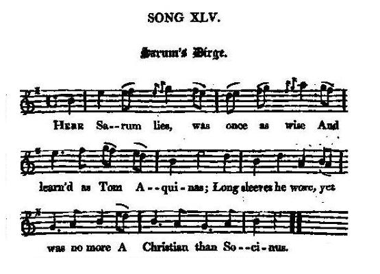

Sarum's Dirge
Elégie de Sarum
Auteur inconnu
Tune - Mélodie"Barbara Allan"
from Hogg's "Jacobite Reliques" , vol. I, N°45, 1819
Sequenced by Christian Souchon


|
SARUM'S DIRGE
1. Here Sarum [1] lies Was once as wise And learn'd as Tom Aquinas. Long sleeves he wore [2] Yet was no more A Christian than Socinus. [3] 2. Oaths pro and con. he swallow'd down, And gold like any layman; Wrote, preach'd, and pray'd, and yet betray'd God's holy church for Mammon. 3. Of every vice He had a spice Although a reverend prelate: He liv'd and died, If not belied, A true dissenting zealot. 4. If such a soul To Heaven has stole, And split old Satan's clutches, You'll then presume There may be room For Marlborough and his duchess. [4] Source: "The Jacobite Relics of Scotland, being the Songs, Airs and Legends of the Adherents to the House of Stuart" collected by James Hogg, published in Edinburgh by William Blackwood in 1819. |
L'ELEGIE DE SARUM
1. Ci-gît Sarum [1] Aussi sage que Saint Thom- -as d'Aquin et plus savant peut-être. Portant rochets [2] Mais guère plus chré- -tien que Faust Socin [3] lui-même. 2. Roi du parjure, Un laïc à la dent dure N'eût mieux que lui gobé les prébendes; Et en dépit De ses faits et dits, A Mammon livra nos temples. 3. De tous les vices Il avait fait ses délices, Malgré la vénération publique. Sa vie, sa mort, Sans lui faire tort Sont celles d'un hérétique. 4. Et si le Ciel Accueille un esprit pareil Et du Malin desserre la presse, On peut penser Que vont y monter Marlborough et sa duchesse. [4] (Trad. Christian Souchon(c)2009) |
|
[1]
Sarum
:
Bishop Gilbert Burnet
(1643 - 1715), known as the "Hector of Salisbury" (Sarum, Latin for "Salisbury").
[2] Long sleeves he wore : length of sleeves of eclesiastic garment were at stake in the controversies of the time. See the song "Hey, then, up we go!" . [3] Fausto Sozzini (1539 - 1604) joined the Polish "Antitrinitarians" and composed their "Racovian Cathechism" (1605). This theology rejects the divinity of Christ and the customary Christian views on God's knowledge. [4] Marborough and his dutchess : see the song "A Halter for Rebels", Note 11. |
[1]
Sarum
:
L'évêque anglican Gilbert Burnet
(1643 - 1715), dit l'"Hector de Salisbury" (Sarum, Latin pour "Salisbury").
[2] Portant rochets : la longueur des manches des habits liturgiques semble avoir été à l'époque un sujet de controverse. Cf. le chant "Allons-y, hauts les cœurs!" . [3] Le Padouan Faust Socin (1539 - 1604) se joignit aux "Antitrinitariens" polonais et est l'auteur de leur "Catéchisme de Racowie" (1605). Cette théologie rejette la divinité du Christ et les conceptions orthodoxes des chrétiens sur la connaissance de Dieu. [4] Marborough et sa duchesse : cf. le chant "La corde pour les rebelles", Note 11. |
|
|
|
|
[This song] is a trifle, pretending to give a character of the Doctor. The following is a much more perfect one, from an old Jacobite poem, entitled,
" The Republican Procession,"
a piece of great cleverness, and, though anonymous, has merit which may justify the fathering of it on one of our best humorous poets.
" ...Next these a lecturer of note, A preaching scandal to his coat, A busy, prating, factious priest, Advanc'd, as joyful as the rest; Distinguish'd by his habit holy, Though 't gave no sanction to his folly, But made the wiser sort believe A knave was hid in pudding-sleeve : To pulpit rais'd by Whigs, to smother The doctrines of his sacred mother, And to confound his factious hearers With Whiggish and fanatic errors; Which he hath done with zeal so hearty, To curry favour with his party, That his whole parish, to his shame, Is nicknam'd Little Amsterdam. Himself a prating good-for-nothing, A very wolf in shepherd's clothing, Who does his utmost forces bend To wrong the church he should defend, And, caterpillar-like, indeed, Destroys the tree by which he's fed." Hogg in "Jacobite Relics" |
"[Ce chant] est une plaisante esquisse du caractère du fameux Docteur. Le texte qui suit est bien plus élaboré. Il est tiré d'un vieux poème Jacobite intitulé,
"la Procession républicaine"
, une pièce pleine d'esprit qu'on doit sans doute à l'un de nos meilleurs poêtes comiques.
"...Vient ensuite un prêcheur fort docte Eclaboussant sa redingote Car il prêche sans plus finir. Il vient aussi nous divertir! Protégé par l'habit de prêtre, Il croit qu'il peut tout se permettre. Les sages sont d'un autre avis: Il cache un gredin, cet habit! Hissé en chaire par les Whigs, Dans un seul but: jeter le doute, Sur la doctrine de jadis, Et égarer ceux qui l'écoutent, Dans le Whiggisme et dans l'erreur. Il l'a toujours fait de bon cœur Pour s'attirer leurs bonnes grâces. Et, honte sur lui! sa paroisse Est dite "Petite Amsterdam"! Quant à lui, ce n'est qu'un verbeux, Un loup qui se grime en bergère, Dont le projet ambitieux Est de nuire au troupeau qu'il gère, Tel le termite, dont on dit Qu'il tue l'arbre qui le nourrit." (Trad. Christian Souchon(c)2009) Hogg dans "Jacobite Relics" |
|
|
|